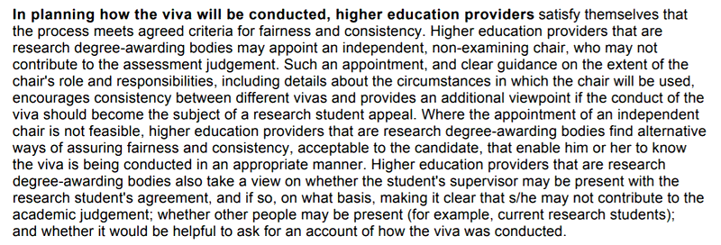

Date: 2020-02-05
Categories: research; admin; phd_students
On the need for PhD viva chairs
I have always been a bit confused by the need for PhD vivas to have "chairs", even when the two examiners are senior academics with a lot of experience.
The QAA guidance says this:

Note that the meaning is: a chair must be used or else you must do X... where X is something which in practice is likely to be impossible, i.e., somehow prove to the candidate that the viva is being conducted in a fair and consistent manner (how could you ever prove such a thing?).
Clearly a University could decide not to appoint a chair, but then they would be open to a law suit along the lines of "the University failed to follow QAA guidance for PhD vivas".
Given the above, it is somewhat surprising that universities still don't appoint chairs in every situation.
I should emphasize that my own personal view is that 2 senior academics with lots of PhD examining experience should be enough to ensure a reasonable level of fairness in a PhD viva, and that the requirement for chairs in all cases is excessive and unnecessary. However, if the QAA writes the above in their guidance, it seems to me that universities are forced in practice to appoint a chair for each viva.
Related posts:
- 2020-05-01 John Whitington PhD viva
- 2020-02-05 On the need for PhD viva chairs
- 2020-01-20 SQLite assumptions, or how to corrupt an SQLite database
- 2019-12-18 VeTSS annual summary
- 2019-08-30 B-tree random write performance
- 2019-08-21 ML'19 Workshop at ICFP: A key-value store for OCaml
- 2018-07-02 Funded PhD places
- 2018-06-14 A typed DSL for parsing
- 2018-05-30 Potential improvements in filesystem performance
- 2018-05-22 First Python program: an Earley parser!
- 2018-02-01 New OCaml library: path resolution
- 2017-09-06 ICFP most influential paper from 10 years ago
- 2017-05-15 PhD viva: congratulations to Thomas Gransden
- 2017-03-16 tjr-btree: a CoW B-tree library in OCaml
- 2015-04-27 Why operational models?
- 2014-11-26 Isabelle on 64bit ubuntu with 32bit libraries
- 2013-11-01 Funded PhD positions
- 2013-04-01 PhD position funded by Microsoft Research